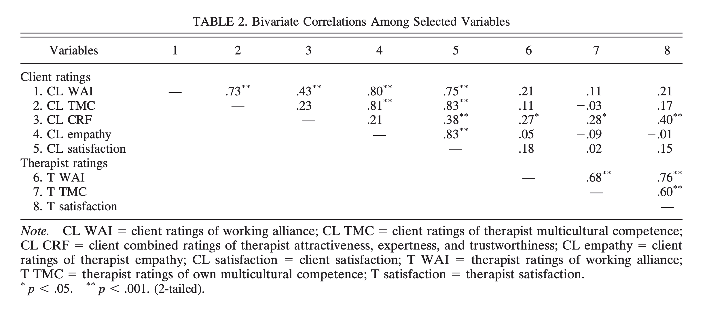
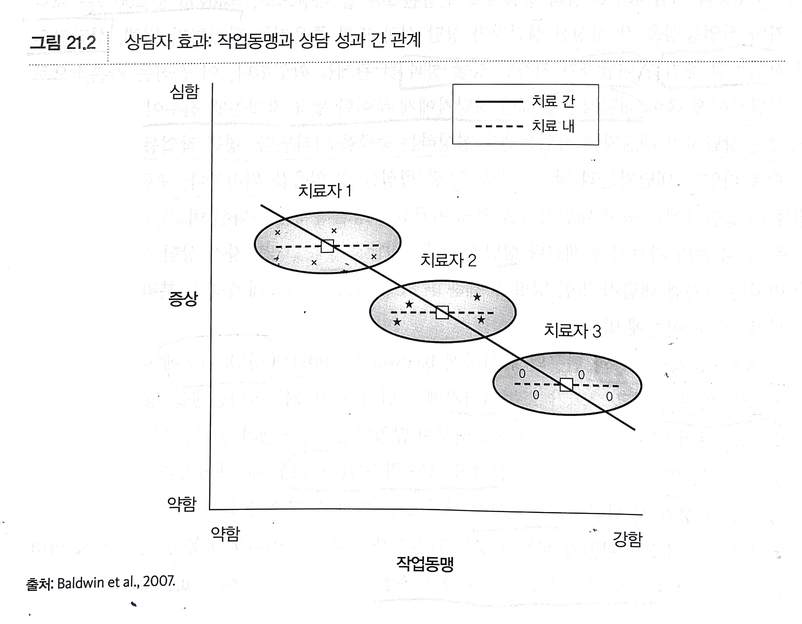
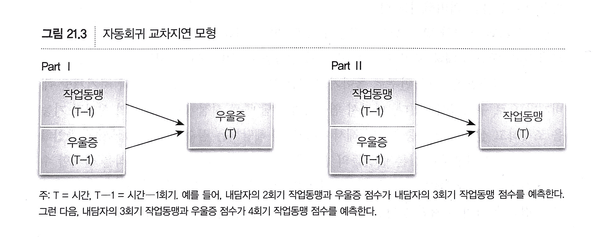
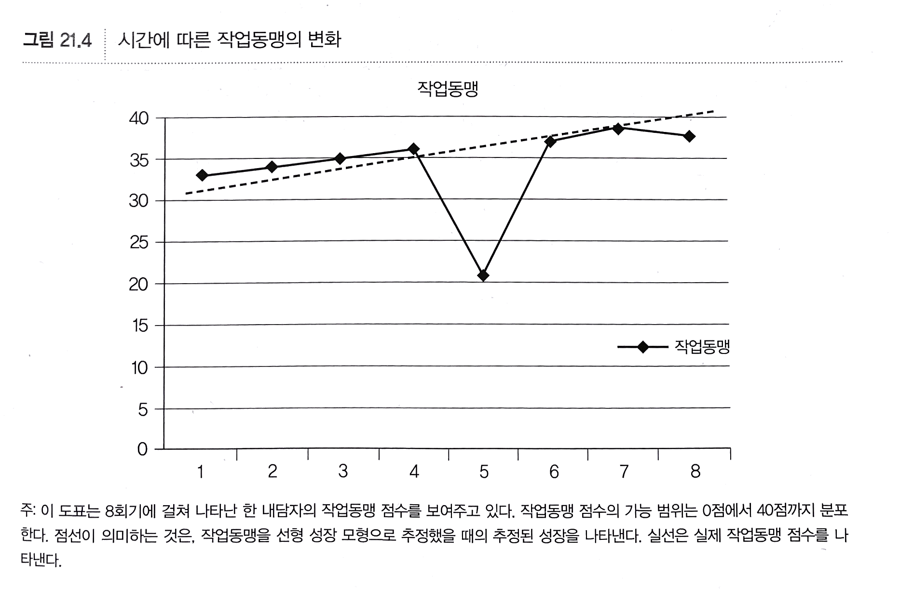

상담 과정 연구 (21장)
상담연구방법론, by Heppner, P. P., Wampold, B. E., Owen, J., Thopso, M. N.
상담 장면에서 발생하는 사건들을 탐색
상담 과정 분야에서 조사된 일곱 가지 유형의 행동들 (Clara Hill, 1991)
- 상담자의 말의 질과 같은 부수적 행동 또는 몸자세와 같은 비언어적 해동
- 상담자의 자기 개방, 해석, 직면(confront)과 같은 언어적 행동
- 지지(support)할지 또는 도전(challenge)할지에 대한 상담자의 의도와 같은 숨겨진 행동
- 내용: 이야기의 주제를 검토하고, 내담자의 행동에 초점을 둔다.
- 방략: 역기능적 사고를 파악하거나 내담자의 방어에 도전하는 등 상담자 기법에 초점을 둔다.
- 상담자의 관여, 공감, 진솔성과 같은 대인관계 태도
- 작업동맹이나 이야기의 주제를 통제하는 것과 같은 상담 관계
초기 과정 연구
<상담심리학 저널> 1권에 실린 3개의 연구
Dipboye(1954)
- 상담자 스타일에 따라 상담 내용이 다른지를 조사
- 9개 범주를 이용해 상담자 유형을 조사
- 내용에 대한 질문, 반응, 해석, 제언
- 감정에 대한 질문, 반응, 해석, 제언
- 정보 전달
- 내용 범주: 검사에 대한 논의, 대인 관계, 가족 관계, 교육적/직업적 문제 및 계획, 자기 준거, 학습 기술 등
- 6명의 상담자 중 4명이 다른 내용 영역을 다룰 때, 상호작용 스타일을 바꾼다는 것을 발견했음.
- 상담자 유형과 내용 범주와의 관련성은 조사하지 않았음.
Danskin & Robinson (1954)
- 상담자의 “주도”하는 빈도를 평가해 상담자의 지시성을 조사
- 주도: 상담자가 한 말과 내담자가 한 말의 전후 위치
- 주도는 상담한 문제의 유형과 관련이 있었으며,
- 적응(adjustment)상의 문제보다는 기술적인(skills) 문제를 호소하는 경우 주도적 진술이 더 많았음.
Berg (1954)
- 내담자의 “비언어적 행동”을 조사
- 성과 관련된 문제를 호소하는 집단 vs. 그렇지 않은 집단 비교
- 성적인 상징을 나타낸다고 가정한 제스쳐의 빈도를 조사
- 호소 문제와 비언어적 유형/빈도와 관련이 없었음.
초기 연구와 최근 연구의 차이점
- 초기 연구는 상담의 내용에 초점
- 최근 연구는 주로 “질적 과정”에 초점: 과정에 대한 내담자의 지각(예. 작업동맹), 또는 회기의 질/기법에 대한 전반적 평가
- 초기 연구가 성과 또는 과정 중 하나에만 초점을 두었다면, 최근 연구는 둘을 연계하려고 시도
방법론적 논점
어디서부터 시작해야 하는가
일반적인 연구와 마찬가지로 연구문제와 가설을 발전시키는 것이 중요
- 종종 실제 상담에 관여하면서 연구 주제를 발전: 녹음을 검토, 수퍼바이저와 상의
- 내적타당도를 강조하는 경우, “모의 연구”가 추천
- 외적타당도를 강조하는 경우, 실제 상담 상황에서 수행
- 양적 접근 vs. 질적 접근
무엇을 측정할 것인가
어떤 측면의 상담 과정을 조사할 것인가
- 개별 참여자(상담자, 내담자)의 행동과 그 변화
- 발전하는 관계
- 개인 상담에서는 상담자와 내담자의 작업 관계
- 집단/가족 상담에서는 집단 과정(예. 응집(cohesion), 규범(norm)), 가족 과정(예. 친밀도, 관여)
- 이 둘의 조합; 체계
상담자의 행동을 조사하는 경우
또는 맨 앞의 7가지 유형들(Hill, 1991)을 참고하거나,
Eliott(1991)의 의사소통 과정의 4가지 초점을 적용하여 연구를 설계;
- 내용(무엇을 말했는지), 행위(무엇을 했는지), 스타일(어떻게 말하고 행동했는지), 질(얼마나 잘 말하고 행동했는지)
예를 들어,
- 상담자가 어떤 말을 했는지
- 그 말을 “어떻게” 했는지: 예. 공감적으로 말했는지, 비판적으로 말했는지, 화를 내면서
- 그런 말을 “얼마나 자주” 하는지
- 언제 그런 말을 하는지
혹은, 상담자의 의도를 조사하는 경우에
- 상담자의 모든 진술을 측정하는 미시적 측정
- 전반적 의도를 반성적으로 생각해보도록하는 포괄적 측정
어떤 수준의 과정을 측정할 것인가
- 발언 행위(speech acts): 말과 말을 서로 주고 받는 것을 미세하게 분석; 예. 목소리의 동시성
- 일화(episodes): 상담에서 일관된 주제를 가지고 있는 부분
- 관계(relationship): 여러 상담 회기를 거치면서 지속되는 상담자-내담자 관계
누구의 관점에 초점을 맞출 것인가
내담자, 상담자, 관찰자
예를 들어, 다문화 역량에 대한 내담자와 상담자 간의 관점의 상관 관계 (Fuertes et al., 2006)
- 내담자와 상담자 간의 상관 관계가 -0.03으로 매우 낮았음

- 다른 연구에서도 세 관점 사이의 상관 계수의 평균은 -0.02 (Tichenor & Hill, 1989)
- 반면, 작업동맹에 관한 평정치는 상담 성과와는 관련이 있는 것으로 나타남.
- 이는 다른 관점들이 다른 구성개념을 측정하기 때문일 수 있음.
- 따라서, 다양한 관점에서 측정하는 것을 고려해 볼 것
- 과정 변수(예. 상담자의 문화적 겸양)는 상담자보다는 내담자나 전문적 관찰자로 측정하는 것이 더 타당할 수 있음. (Hook et al., 2013)
얼마나 많이 측정할 것인가
연구 문제의 유형과 설계 특성에 따라 좌우됨
- 한 회기만을 측정할 것인가 여러 회기를 측정할 것인가?
- 상담이 진행되면서 나타나는 상담자/내담자의 개인차가 들어날 수 있음.
- 작업동맹의 경우, 안정적인 개인차를 추론하기 위해서는 최소 4회기가 필요하다고 주장(Crits-Christoph et al., 2011)
- 한 회기에서 첫 15분 동안 측정할 것인가?
- 회기 내의 모든 내용을 사용할 것인가, 각 회기의 평균값을 사용할 것인가?
- 거시적 측정을 강조한다면, “얇은 조각(thin slices)”(예. 3분 동안의 상호작용 코딩하기)
- 실제 행동/상호작용을 대표하는 것이가를 고민
연구 설계
앞서 다뤘던 내용이 모두 해당하나, 일반적으로 활용되는 방법론적 접근들에 초점
실험 설계
대부분의 과정 변수들이 실험 설계에 적당하지 않음.
- 상담자의 공감, 동맹, 개방성 등은 실험적으로 조작하기 어려움
- 이는 상담의 일부로서 내담자에 대한 실시간 반응의 일부임.
- 윤리적 문제도 포함.
예를 들어,
- 상담자의 “자기 개방”과 “상담 성과” 간의 관계를 조사
- 종속 변수로 심리적 기능 척도를 사용
- 4명의 전문 상담자에게 자기개방을 활용하도록 훈련시킴
- 역할극을 통해 자기개방의 능숙함을 2명의 평정자가 “자기개방 척도”를 사용해 평가함.
- 40명의 내담자(상담자당 10명)를 두 조건에 무선할당
- 상담자가 한 회기당 5회씩 자기개방 (5명)
- 자기개방 전혀 하지 않음. (5명)
- 비디오 녹화로 평정자가 조작이 적절히 수행되었는지 평가
문제점들
- 상담자를 무선 할당한 것이 아님: 동일한 상담자가 실시한 상담 간에 상관 관계가 있을 수 있음.
- 자기 개방 조건을 선호하는 연구자의 편향이 영향을 주었을 수 있음.
- 인위적인 자기개방 횟수는 외적타당도를 약화시킬 수 있음.
- 상담자의 자기개방의 영향 또는 깊이 면에서 동일하지 않을 수 있음.
- 자녀가 있다고 개방하는 상담자
- 성장하면서 성적인 학대를 경험했다고 개방하는 상담자
Hoglend et al. (2006, 2011)의 연구
- 심리역동치료에서의 전이 해석(transference interpretation)의 효과를 조사
- 내담자가 두 조건에 할당 (7명의 상담자)
- 전이 해석에 노출 (52명)
- 전이 해석은 미포함 (48명)
- 상담자는 10명 ~ 17명의 내담자를 상담
- 조작 점검: 어떤 조건을 관찰했는지 모르는 평정자각 각 내담자에 대해 4-5개의 비디오를 코딩
- 중간 정도의 전이 해석 vs. 아주 낮은 수준
- 종속변수: 대인관계 기능과 증상의 변화를 포함한 4개의 심리 기능 척도
- 결과: 의미 있는 차이가 없었음.
- 하지만, 사전 검사에서 측정한 대상관계의 질이 낮다고 보고한 내담자들의 경우, 전이 해석 조건에서 더 좋은 성과를 보였음.
- 내담자 변수를 고려하는 것의 중요성을 시사
상관 설계
상담 과정 연구에서 변수의 조작이 어렵기 때문에 주로 상관 설계가 일반적으로 활용됨.
- 상담 전,후의 내담자의 심리 기능을 측정
- 상담 과정 중에 상담 과정을 측정
- 상담 과정과 상담 성과 간의 상관 관계를 조사
Lo Coco et al. (2011)의 연구
- 내담자와 상담자가 평가한 “실재 관계”와 “상담 성과”의 관계를 조사
- 실재 관계: “사람 사이에 존재하는 개인적인 관계로서, 상대방에게 진솔한 정도, 상대방에게 알맞는 방식으로 상대방을 지각하고 경험하는 정도로 표현된다”(Gelso, 2009)
- 50명의 내담자들과 상담자가 실재 관계에 대한 본인들의 지각을 3회기에 평정
- 내담자들은 사전, 사후에 심리 기능 척도를 평정
- 내담자들의 경우에만, 실재관계가 상담 성과를 유의하게 예측 (상관관계)
Mallinckkrodt, Porter, & Kivlighan (2005)의 연구
- “상담자에 대한 내담자의 애착”과 “작업동맹” 간의 관계를 조사
- 성인애착이론에 기초를 둔 내담자의 애착 유형
- 안전(secure), 회피-두려움(avoidant-fearful), 집착-합병(preoccupied-merger)
- 두 표본(n=38, n=44)으로부터 4회기~9회기 측정
- 안전 애착 ~ 작업동맹: r = .69, .84
- 회피-두려움 애착 ~ 작업동맹: r = -.62, -.56
- 집착-합병 애착 ~ 작업동맹: r = -.13, .12 (ns)
- 상담자와 강하게 연계되고 싶지만 그렇게 할 수 없음을 시사
상담 과정 연구에서 상담사의 영향을 조사하는 것은 중요함.
- 보통 상담자는 1명 이상의 내담자를 상담
- 같은 상담자에 속한 내담자들은 유사한 경험을 할 가능성이 높음.
- 연구 설계나 분석에서 상담자를 고려해야 함.
- 여러 연구에서 상담자 간에 “상담 성과”나 실행면에서 큰 차이가 존재함을 보고하고 있음.
- 예를 들어, “작업 동맹”과 “상담 성과” 간의 관계에서 “상담자의 기여”와 “내담자의 기여”를 분리할 수 있음.
- Baldwin, Wampold, & Imel (2007)의 연구
- 어떤 내담자는 상대적으로 상담자와 협력적인 유대관계를 잘 맺을 수 있음.
- 어떤 상담자는 상대적으로 상담자와 내담자와 양질의 작업동맹을 형성할 수 있음.
- 동시에, 이 둘의 상호작용도 존재할 수 있음.
Baldwin et al. (2007)의 연구
- 작업 동맹과 상담 성과 간의 관계를 조사
- 상담 전후 내담자의 “심리적 고통”을 측정
- 3/4회기에서 내담자가 지각한 작업동맹을 측정
- 상담 전 심리적 고통을 통제했을 때, 상관 관계: r = -.21
- 190개의 연구의 평균 추정치(r=.28)과 유사함
- 작업동맹에 대한 상담자의 기여가 매우 높은 것으로 나타남.
- 동일 상담자에 속한 내담자 간의 작업 동맹 평가의 차이는 상담 성과과 무관했음.

충실도(adherence)
- 상담자가 처치 절차/메뉴얼을 얼마나 잘 따랐는가
- 상담 성과에서 중요한 역할을 하는 것으로 알려짐
- 임상 연구에서는 독립변수로서 잘 조작되었는지를 보장
- 각 내담자에게 일관된/동일한 방식으로 제공되었는가
- 메뉴얼에 기술된 방식으로 충실히 수행되었는가
- 조작 검검 척도를 사용해 평가하는 것이 바람직.
- 예를 들어, Imel et al. (2011)의 연구에서
- 동기강화치료 기법을 충실히 사용했는지 조사
- 12명의 상담사가 79명의 내담자를 상담
- 별도의 평정자들이 동기강화치료 기법의 충실도를 평가
- 한 상담사에 속한 내담자들 사이의 일관성
- 상담자 간의 일관성
- 내담자들에게 동일한 처치를 제공하지 못했음.
- 다른 상담자 간에도 일관되지 못했음
성과 연구에서 독립변수의 조작이 어려움을 잘 보여줌!
- 상담자의 융통성을 시사?
- 내담자의 욕구에 대한 상담자의 반응성?
- 실험의 타당성을 약화시키는 요인들
기술의 발달로 인해 미세한 상담 과정을 조사할 수 있게 되었음.
예를 들어, 상담자와 내담자 사이에 존재하는 “목소리 동시성(voice synchrony)”을 측정 (Imel et al., 2014)
- 외부 평정자들이 상담자의 공감 수준을 평가했는데, 이를 목소리 동시성으로 구분할 수 있었음.
- 상담 회기 중 건네는 말의 “내용”과는 다른 의사소통 방식의 미묘하고 중요한 차이가 있음을 시사한다
종단 설계
상담 과정에서 상담자의 개입은 시간에 따라 전개되는 상담 관계 내에서 위치함.
예를 들어, 치료적 관계가 발달하면서 이것이 어떻게 상담자 기법 사용에 영향을 미치는가?
따라서, 상담 과정 연구에서 시계열 설계는 “상담 과정 전체에 걸쳐 존재하는” 상담 과정 변수를 조사하는데 적합함.
예를 들어, Owen 등 (2015)의 연구에서는
- 약물 사용등의 문제를 호소하는 2990명의 군인과 98명의 상담사를 대상
- 첫 7회기 동안 작업동맹의 변화와 상담 성과와의 관계를 조사
- 위 연구에서처럼, 내담자의 기여와 상담자의 기여를 분리해 냈으며, 비슷한 결론을 얻었음.
- “작업동맹의 변화”는 상담 성과의 10%를 설명한데 반해, 한 회기에서만 측정했을 때는 4%만을 설명했음.
Zilcha-Mano 등 (2014)의 연구
- 작업동맹과 우울증 간의 관계를 조사
- 어느 것이 먼저 나타나는가?

성장곡선 모형
- 예를 들어, 집단상담 연구에서 응집 수준에 관한 변화를 조사
- 아래 그림과 같다면, 선형적인 성장 모형이 지지될 가능성이 높음.
- 한편으로는, 훼손-복구의 순환을 보이는 경우 오히려 성공적인 상담 성과를 나타내는 지표가 될 수 있음.
- 즉, “변화”가 성과와 어떻게 관련되는지를 분석할 수 있음.
- 곡선의 성장을 보이는 경우, 예를 들어 처음 3회기 동안 성장하다, 다음 3회기는 감소하고, 다음 3회기는 다시 상승하는 경우, 최소 9회기의 자료가 요구
- 상담자 당 내담자 수가 충분히 확보되어야 통계적 검증력을 높일 수 있음.
